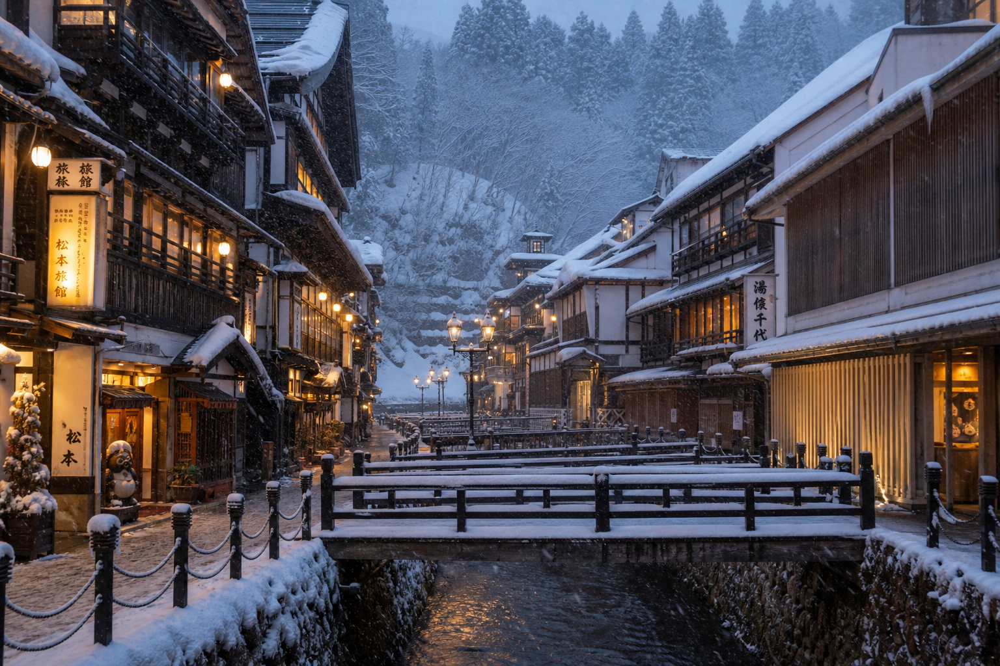
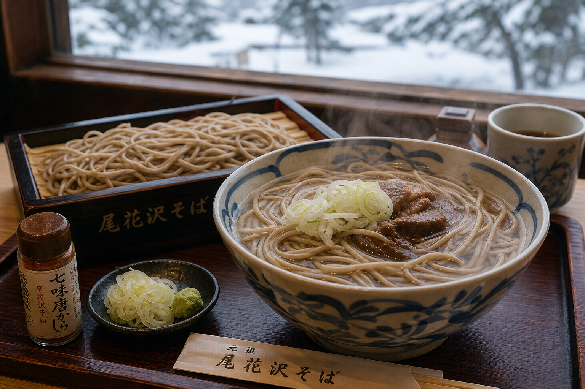

Info
尾花沢市公式ポータルで要確認
積雪・運行は出発前に要確認
リフト
ペア1基
900m · 毎時1,200人
コース
6コース
初級〜中級 · 第6はリフト外
雪質
オホーツク粉雪
天気予報も併用
ナイター
〜21:00
月〜土 18:00以降
Pricing
大人 ¥2,940/日、
水曜は ¥600。
営業は例年1月中旬から3月中旬まで。大人1日券¥2,940、水曜2時間券¥600。
- 親子4時間 ¥2,200
- 水曜2時間 ¥600
- 駐車428台 · 無料


Half-Day Model
道東周遊に、
半日を組み込む。
流氷観光や博物館見学の行程に、数時間のスキーを差し込むモデル。
LAKE · SEA · POWDER · ONSEN01
尾花沢駅・女満別
駅からバス・タクシー約10分
02
ゲレンデ到着
駐車428台無料
03
2〜4時間滑走
1日券¥2,940
04
ゲレンデ食堂
麺類・カレー・軽食
05
湖畔ホテル
蟹づくし · 貸切風呂
Access
所在地
〒099-2421
山形県尾花沢市字呼人28-3
JR尾花沢駅から約6km · 女満別空港から約40km
TEL 0152-48-2550（スキー場 · シーズン中）
TEL 0152-45-5655（オフシーズン）